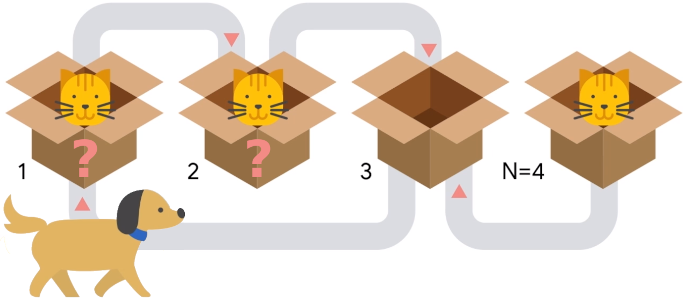

The story, all names, characters, and incidents portrayed in this problem statement are fictitious. No identification with actual persons is intended or should be inferred.
It is 1935 and a meeting between two Nobel prize winners is producing astonishing results. Schrödinger, a famous physicist, invited Pavlov, a famous physiologist, to see his experiments with cats in boxes. Pavlov brought his dog with him to keep up with his own research, and the combination proved interesting, to say the least.
Schrödinger had a row of $$$\mathbf{N}$$$ boxes. Some boxes definitely contain a cat, some boxes definitely do not contain a cat, and some boxes may or may not contain a cat. Each box is only big enough to hold a single cat. Each box is also equipped with a special quantum tunnel, that allows the cat in the box to move to some other specific box if the destination was empty. The tunnels work in a single direction.
Cats are usually mellow and quiet and do not use the tunnels unless they become startled. When a third unannounced guest rings the bell, Pavlov's dog gets excited immediately and starts running and barking. The dog starts at box $$$1$$$ and runs towards box $$$\mathbf{N}$$$. As the dog runs, it passes right next to each box, one at a time. When it passes next to a box that contains a cat, the cat in that box becomes startled. The startled cat checks the available tunnel and, if the destination box is empty, uses it to escape. If the destination box is occupied, the cat stays in its current box. The same cat can be startled more than once if they move to a box the dog will get to afterwards, and will proceed in the same way every time it is startled (using only the newly available tunnel each subsequent time).

After Pavlov's dog finally stops right next to the last box, Pavlov asks Schrödinger whether there is a cat in that last box. Schrödinger, true to his fame, replies that he does not know. Pavlov notices that the answer may depend on whether or not there were cats in the unknown boxes. Moreover, he also notices that because there are $$$k$$$ unknown boxes, there are $$$2^k$$$ possible initial configurations, one for each combination of statuses of the unknown boxes. Pavlov tells Schrödinger that they should try to calculate how many of the $$$2^k$$$ initial configurations would result in having a cat in the last box. You are asked to recreate that calculation. Since the output can be a really big number, we only ask you to output the remainder of dividing the result by the prime $$$10^9+7$$$ ($$$1000000007$$$).
Neither cats, nor dogs, nor Nobel prize winners were harmed in the making of this problem statement.
The first line of the input gives the number of test cases, $$$\mathbf{T}$$$. $$$\mathbf{T}$$$ test cases follow, each
described by exactly three lines. The first line of a test case contains a single integer
$$$\mathbf{N}$$$, the number of boxes in Schrödinger's experiment. Boxes are numbered between $$$1$$$
and $$$\mathbf{N}$$$, in the order Pavlov's dog passes them by. The second line of a test case
contains a single string $$$\mathbf{S}$$$ of $$$\mathbf{N}$$$ characters. The $$$i$$$-th character of $$$\mathbf{S}$$$ (counting
from left to right) represents the contents of box $$$i$$$: it is an
uppercase 'C' if the box contains a cat, a period '.' if the
box does not contain a cat and a question mark '?' if it is unknown whether
the box contains a cat or not. The third line of a test case contains $$$\mathbf{N}$$$ integers
$$$\mathbf{B_1}, \mathbf{B_2}, \dots, \mathbf{B_N}$$$, representing that there is a tunnel going out of box $$$i$$$
and into box $$$\mathbf{B_i}$$$, for all $$$i$$$.
For each test case, output one line containing Case #$$$x$$$: $$$y$$$,
where $$$x$$$ is the test case number (starting from 1) and $$$y$$$ is the number of initial
configurations that would result
in a cat being in the last box and unable to escape despite hearing the barking, modulo the prime
$$$10^9+7$$$ ($$$1000000007$$$).
Time limit: 10 seconds.
Memory limit: 1 GB.
$$$1 \le \mathbf{T} \le 1234$$$.
the length of $$$\mathbf{S} = \mathbf{N}$$$.
Each character of $$$\mathbf{S}$$$ is either an upper case 'C', a period '.' or
a question mark '?'.
$$$1 \le \mathbf{B_i} \le \mathbf{N}$$$, for all $$$i$$$.
$$$\mathbf{B_i} \neq i$$$, for all $$$i$$$.
$$$1 \le \mathbf{N} \le 100$$$.
$$$i - 5 \le \mathbf{B_i} \le i + 5$$$, for all $$$i$$$.
(All tunnels connect to nearby boxes.)
$$$1 \le \mathbf{N} \le 5000$$$.
4 4 ??.C 2 3 1 3 4 ???? 2 3 1 3 6 ?.???? 6 6 6 6 6 5 34 ????????????????????????????????CC 2 3 4 5 6 7 8 9 10 11 12 13 14 15 16 17 18 19 20 21 22 23 24 25 26 27 28 29 30 31 32 33 34 33
Case #1: 1 Case #2: 2 Case #3: 15 Case #4: 294967268
Sample Case #1 is illustrated in the problem statement. There are $$$4$$$ possible configurations:
...C: the dog runs through the first $$$3$$$ boxes without changing anything
because there is no cat there. Then, when it gets to the last box, the cat hears it and escapes
to box 3. Therefore, there is no cat in the last box in this case.C..C: when the dog barks near box $$$1$$$, that startles the cat that
goes through the tunnel to get to box $$$2$$$, which was empty. Then, the same cat
gets startled again when the dog barks near box $$$2$$$ and gets to box $$$3$$$. And when
the dog barks next to box $$$3$$$, the cat hears it and returns to box $$$1$$$. Therefore,
when the dog gets to box $$$4$$$ and the other cats hears it, box $$$3$$$ is empty so the
cat escapes and the last box ends up empty..C.C: This case is very similar to the previous one. After the dog goes through
the first box and nothing happens, the state is the same as before, so the ultimate result
is the same: last box empty.CC.C: In this case, the cat in the first box cannot escape when it hears the
dog, so it remains in box $$$1$$$. Then, when the cat in box $$$2$$$ gets startled it escapes to
box $$$3$$$ leaving a state of C.CC. When the dog gets to the box $$$3$$$, the cat
currently there cannot escape to box $$$1$$$ so the state remains the same. Finally, when the
dog gets to the last box, the cat that is there cannot escape because box $$$3$$$ is occupied
this time. So, in this case, the last box ends up with a cat after the dog ends its journey.
In Sample Case #2, the tunnels are set up the same as in Sample Case #1. Since no tunnel ends
at the last box, the configurations that start with no cat at the last box will also not end with
a cat there, so we do not need to count them. Then, we have $$$8$$$ additional configurations. The
$$$4$$$ we considered for Sample Case #1, out of which only $$$1$$$ ends up with a cat at the last
box. The remaining $$$4$$$ configurations are: ..CC, C.CC,
.CCC, CCCC. From these additional $$$4$$$ configurations, only in the
last one listed a cat ends up in the last box, for a total of $$$2$$$ overall.
In Sample Case #3, notice that for a cat to remain in the last box after the dog barks near it, both that box and box $$$5$$$ must be occupied then (otherwise, either there is no cat in the last box, or it will escape to box $$$5$$$). Since there is no tunnel going into box $$$5$$$, a cat must start there. As long as there is another cat in any other box, box $$$6$$$ will get (or remain) occupied before the cat in box $$$5$$$ gets an opportunity to escape, so all of those will end up with a cat in the last box. As we argued before, a single cat is not enough. Thus, we need to count the number of configurations with a cat in box $$$5$$$ and at least one other cat. There are $$$2^4$$$ configurations with a cat in box $$$5$$$, and out of those, only $$$1$$$ has no other cat, so the answer is $$$2^4-1=15$$$.
In Sample Case #4, in all of the $$$2^k$$$ ways in which the $$$k$$$ unknown boxes may exist a cat would be left in the last box.